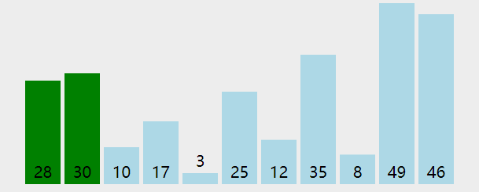

void bubble(int a[],int length){
for(int i=length-1;i>=1;i--){ //n-1轮冒泡，n-1,n-2,...,1
for(int j=0;j<i;j++){ //冒泡的次数0,1,...,i-1
if(a[j]>a[j+1]){ //如果前面的大于后面的交换(从小到大)
int tmp = a[j];
a[j] = a[j+1];
a[j+1] = tmp;
}
}
}
}
void selection(int a[],int length){
for(int i=0;i<length;i++){ //找位置
int k=i;
for(int j=i+1;j<length;j++){ //找包括i在内的最小的
if(a[j]<a[k])
k = j;
}
if(k!=i){ //把找到的最小的交换到i位置
int temp = a[i];
a[i] = a[k];
a[k] = temp;
}
}
}

void insertion(int a[],int length){
int j,k;
for(int i=0;i<length;i++){
for(j=i-1;j>=0;j--)
if(a[j]<a[i])
break;
if(j!=i-1){
int temp=a[i];
for(k=i-1;k>j;k--)
a[k+1] = a[k];
a[k+1] = temp;
}
}
}

shell排序实际上是一种直接插入排序推广，其基本原理为其先将一组数分成若干组； 此处应该注意，分组的方式不能几个几个紧挨着分组，而是采用每次所分组数均为素数且最后一次分组为1的方法。 采用分组的好处是，在每次排序完后都是将小的数尽量往前面赶，大的数尽量往后面赶，最后一次排序直接采用直接插入排序。 运用到了直接插入排序越有序有快的特性。
例如12、5、9、34、6、8、33、56、89、0、7、4、22、55、77的排序步骤如下：

void shell(int a[],int length){
int drr[] = {5,3,1};
int lend = sizeof(drr)/sizeof(drr[0]);
for(int i=0;i<lend;i++){
int gap = drr[i];
for(int j = gap;j<length;j++){
int temp = a[j];
int k = 0;
for(k = j-gap;k >= 0;k-=gap){
if(a[k] > temp)
a[k+gap] = a[k];
else
break;
}
a[k+gap] = temp;
}
}
}

void quick(int a[],int left,int right){
int mid,l=left,r=right,temp;
mid = a[(l+r)/2];
do{
while(a[l]<mid) l++; //在左半部找比mid大的数
while(a[r]>mid) r--; //在右半部找比mid小的数
if(l<=r){
temp = a[l];
a[l] = a[r];
a[r] = temp;
l++;
r--;
}
}while(l<=r);
if(left<r) quick(a,left,r);
if(l<right) quick(a,l,right);
}

void merge(int a[],int r[],int left,int right){
if(left==right)
return ;
int mid=(left+right)/2;
merge(a,r,left,mid);
merge(a,r,mid+1,right);
int i=left,j=mid+1,k=left;
while(i<=mid && j<=right){
if(a[i]<=a[j]){
r[k]=a[i];
k++;
i++;
}else{
r[k]=a[j];
k++;
j++;
}
}
while(i<=mid){
r[k]=a[i];
k++;
i++;
}
while(j<=right){
r[k]=a[j];
k++;
j++;
}
for(i=left;i<=right;i++)
a[i] = r[i];
}


void adjust(int a[],int start,int end){
int dad = start; //父节点指针
int son = dad * 2 + 1; //子节点指针
while(son<=end){
if(son+1<=end && a[son]<a[son+1])
son++; //比较两个子节点大小，选择小的
if(a[dad]>a[son])
return ; //父节点比子节点小，调整完成
else{
int temp = a[dad];
a[dad]=a[son];
a[son]=temp;
dad=son;
son = dad *2+1;
}
}
}
void heap(int a[],int length){
for(int i=length/2-1;i>=0;i--) //初始化顶堆
adjust(a,i,length-1);
for(int i=length-1;i>0;i--){
int temp=a[0];
a[0]=a[i];
a[i]=temp;
adjust(a,0,i-1); //调整堆顶
}
}

void counting(int a[],int length){
int maxn=-1;
for(int i=0;i<length;i++){
if(a[i]>maxn)
maxn = a[i];
}
int c[maxn+10],ranked[maxn+10];
memset(c,0,sizeof(c));
memset(ranked,0,sizeof(ranked));
for(int i=0;i<length;i++)
c[a[i]]++;
for(int i=1;i<=maxn;i++)
c[i] = c[i] + c[i-1];
for(int i=length-1;i>=0;i--)
ranked[--c[a[i]]] = a[i];
for(int i=0;i<length;i++)
a[i] = ranked[i];
}

void bucket(int a[],int length,int maxn){
int b[maxn+1];
memset(b,0,sizeof(b));
for(int i=0;i<length;i++)
b[a[i]]++;
int p=0;
for(int i=0;i<=maxn;i++)
while(b[i]>0){
a[p++] = i;
b[i] --;
}
}

int findMaxNum(int a[],int n){
int maxn = 0;
for(int i=0;i<n;i++)
if(a[i]>maxn)
maxn = a[i];
return maxn;
}
int getLoopTimes(int n){
int count = 1;
int temp = n/10;
while(temp!=0){
count ++;
temp =temp / 10;
}
return count;
}
void radixSort(int a[],int n,int p){
int buckets[10][n];
memset(buckets,0xf0f0f0f0,sizeof(buckets));
int div = 1;
for(int i=1;i<p;i++) div = div * 10;
for(int i=0;i<n;i++){
int row = (a[i]/div)%10;
for(int j=0;j<n;j++){
if(buckets[row][j]==0xf0f0f0f0){
buckets[row][j]=a[i];
break;
}
}
}
int k=0;
for(int i=0;i<10;i++){
for(int j=0;j<n;j++){
if(buckets[i][j]!=0xf0f0f0f0){
a[k]=buckets[i][j];
buckets[i][j]=0xf0f0f0f0;
k++;
}else{
break;
}
}
}
}
void radix(int a[],int length){
int maxNum = findMaxNum(a,length);
int maxLoop = getLoopTimes(maxNum);
for(int i=1;i<=maxLoop;i++){
radixSort(a,length,i);
}
}

void cocktail(int a[],int length){
int bottom =0,top = length-1,bound=0,temp;
bool swapped = true;
while(swapped){
swapped = false;
for(int i=bottom;i<top;i++){ //由底向上冒
if(a[i]>a[i+1]){
temp = a[i];
a[i]=a[i+1];
a[i+1]=temp;
swapped = true;
bound = i;
}
}
top = bound;
for(int i=top;i>bottom;i--){
if(a[i]<a[i-1]){
temp = a[i];
a[i]=a[i-1];
a[i-1]=temp;
swapped = true;
bound = i;
}
}
bottom = bound;
}
}